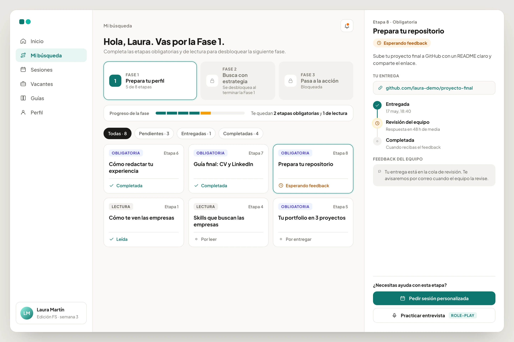

El problema
Los procesos de empleabilidad suelen estar fragmentados en hojas de cálculo, correos, documentos y herramientas desconectadas. Eso dificulta que el equipo siga el progreso de cada candidato, gestione sesiones, comparta recursos y dé un apoyo constante. Y los candidatos no tienen una estructura clara de qué hacer, cómo mejorar su perfil ni cómo gestionar su búsqueda.
El reto: una plataforma que sirviera a los dos lados a la vez. Que el candidato pudiera llevar su proceso, y que el equipo pudiera coordinar, supervisar y apoyar con flujos escalables.
Mi rol
Responsable del diseño integral: estructura, flujos, interfaz y la implementación en Softr. Trabajé con el equipo de búsqueda de empleo para entender su flujo real, sus dificultades y sus limitaciones operativas, y traducir procesos complejos en experiencias claras por rol.
Usuarios y roles
La plataforma se diseñó para varios roles con objetivos, responsabilidades y permisos distintos. El desafío: que todos trabajaran en el mismo sistema sin interferir entre sí ni acceder a información confidencial.

Candidatos
Entender su situación (en búsqueda, en proceso, contratado), acceder a recursos, postularse a vacantes, reservar sesiones y prácticas de entrevista, recibir feedback.
Claridad · visibilidad del progreso · baja carga cognitivaEquipo de búsqueda de empleo
Supervisar a muchos candidatos a la vez, crear sesiones y contenido, revisar CV, portfolios y repositorios, responder dudas, seguir métricas del programa.
Eficiencia · paneles claros · menos trabajo manualEmpresas colaboradoras
Buscar perfiles junior, publicar vacantes, enviar feedback. Tuvo portal propio en el lanzamiento; hoy el equipo gestiona sus vacantes directamente.
Rol de la primera versión, retirado despuésPermisos y control de acceso
Cada rol se diseñó con permisos específicos de visibilidad y edición, a nivel de página, bloque y campo. Dentro de un mismo rol, cada usuario ve solo lo suyo.

Arquitectura de la información y flujos
Para reducir complejidad y escalar, el producto se estructuró en módulos compartidos por todos los roles, con visibilidad y acciones por rol superpuestas. Una decisión clave fue separar contenido, acciones y seguimiento en módulos distintos, manteniendo la misma navegación para todos.

Tres recorridos independientes (candidato, equipo y empresa) que se encuentran en cinco puntos concretos. Esos puntos de contacto son los que sustituyen las hojas de cálculo y los correos: la información pasa de un rol a otro dentro del mismo sistema.

Decisiones de diseño
Las decisiones se centraron en reducir la complejidad operativa, servir a varios roles y permitir flujos escalables sin aumentar la carga cognitiva. Los dos wireframes son reconstrucciones simplificadas de la pantalla principal de cada rol.
El candidato: «Mi búsqueda»

El equipo: cola de revisión

Cómo lo diseñaría hoy: «Mi búsqueda» en alta fidelidad
El wireframe muestra la estructura; esta propuesta muestra cómo la llevaría hoy a alta fidelidad, con lo aprendido de las valoraciones de los candidatos. El estado de cada entrega se lee como una línea de tiempo (entregada, en revisión, completada) con el tiempo medio de respuesta, y la ayuda vive dentro de la etapa: pedir una sesión personalizada o practicar la entrevista con role-play sin salir de la pantalla.

Experiencias por rol, no una solución única
Cada rol ve solo lo relevante para él, y dentro del rol cada persona ve solo lo suyo.
Onboarding más rápido · menos errores · privacidadLa visibilidad del progreso como núcleo
Estados, etapas claras y vistas centralizadas para saber en qué punto está cada candidato y qué toca después.
Claridad · menos comunicación cruzadaContenido, acciones y seguimiento separados
Cada área evoluciona sin romper la estructura inicial.
Menor carga cognitiva · escalabilidadEficiencia por encima de estética
Herramienta interna de uso diario: legibilidad, patrones consistentes e interacciones predecibles.
Tareas más rápidas · menos fricciónDiseño para escalar
Patrones reutilizables y navegación consistente para añadir roles y funciones sin interrumpir lo existente.
Mantenimiento a largo plazoUn recorrido con orden, no una biblioteca
La búsqueda en tres fases con candado; etapas obligatorias o de lectura; «entregada» y «completada» son estados distintos: el candidato entrega, el equipo cierra.
El método del equipo embebido en el productoColas de trabajo en lugar de listas de personas
Vistas por estado (sin entregar, pendientes de feedback, dudas sin responder) con contador; los mismos estados los ve el candidato.
Cero fricción · nada se queda sin responderPragmatismo donde no hay integración
Las candidaturas externas ocurren fuera. Un botón «indicar que ya me he inscrito» mantiene la trazabilidad sin una sola integración.
Datos que antes no existían · cero coste técnicoIteración: la vista de candidatos del equipo, de tabla a tarjetas
La primera versión mostraba a los candidatos en una tabla: completa, pero con más de veinte columnas, los datos que el equipo consulta a diario (edición, CV, LinkedIn, GitHub, skills) quedaban fuera de pantalla o reducidos a un guion. El feedback fue unánime: «quiero ver lo importante sin desplazarme».

La sustituí por tarjetas con jerarquía fija (nombre, contacto, edición como etiqueta de color, los tres enlaces que definen la empleabilidad y las skills como chips), con búsqueda y filtros por competencias, edición y nivel de inglés. El detalle completo sigue a un clic. En el lado del candidato apenas hubo feedback negativo: el trabajo fue añadir secciones sin romper la estructura.
El resultado del cambio, medido
Comparé en la analítica de la plataforma nueve meses con la tabla (abril a diciembre de 2025) y nueve meses con las tarjetas (enero a septiembre de 2026). Siempre por persona y en proporción, porque en 2026 el equipo creció.
fichas de candidato abiertas por cada consulta de la lista: de 63 por cada 100 consultas a 49. Lo que el equipo necesita ya se lee en la tarjeta.
consultas de la lista por persona del equipo: la vista pasó a ser el punto de trabajo diario.
Es una comparación antes y después, no un experimento controlado: en el mismo periodo cambiaron otras cosas. Pero las dos señales van en la dirección que buscaba el rediseño.
Escuchar a los candidatos: una valoración al cerrar cada fase
Al terminar cada fase de «Mi búsqueda», el candidato la puntúa del 0 al 10 y puede dejar un comentario. Las respuestas llegan al equipo en la misma plataforma, en su propia pestaña de la cola de trabajo, y leídas en conjunto señalaron problemas que ninguna otra vista mostraba.
Querían la revisión de su CV y su LinkedIn antes de empezar a postular, no después.
CambiamosMás personas en el equipo dedicadas a analizar CV y LinkedIn, para que el feedback llegue a tiempo.
Algunos se sentían solos en las fases de trabajo autónomo y necesitaban aterrizar los consejos en su caso concreto.
CambiamosSe mejoró el proceso de las sesiones personalizadas y se añadió una sección de role-play para practicar entrevistas.
Había enlaces rotos en las guías, sobre todo en la parte de Git.
CambiamosSe revisaron y arreglaron todos los enlaces del contenido.
Todo lo que señalaron los candidatos se revisó y se cambió. Es la parte del sistema que más me gusta: el producto no solo guía al candidato, también le da un canal para decir qué no funciona.
«He podido trabajar con la plataforma que Sandra ha diseñado y construido para mí y mi equipo, y la verdad es que estoy muy contento con ella. No se trata solo de una herramienta para nosotros, también la utilizan los candidatos que están buscando empleo de forma activa. Cada petición que tenemos, ya sea nuestra o de los candidatos, es escuchada y procesada por ella, siempre teniendo en cuenta todas las opiniones de los usuarios. Gracias a ella, el trabajo es más cómodo y los procesos se hacen más ágiles para todos. Por supuesto, siempre hay margen para mejorar, pero es una herramienta que va evolucionando con nosotros y que nos ayuda en nuestro trabajo diario.»
Resultados y aprendizajes
Una solución SaaS B2B escalable que apoya a candidatos y equipo mediante flujos estructurados y basados en roles, en uso desde principios de 2024. Diseñada y construida por una sola persona, sin equipo de desarrollo.
Este proyecto reforzó la importancia de diseñar sistemas, no solo interfaces: claridad, permisos y escalabilidad en entornos con múltiples roles. Y de tomar decisiones de producto que equilibren las necesidades de cada usuario con las limitaciones reales.
Qué haría distinto
La tabla de más de 20 columnas llegó al uso diario y fue el feedback del equipo el que la cambió. Hoy enseñaría wireframes a dos o tres personas del equipo antes de construir la vista.
Sé cuántas personas usan la plataforma, pero no medí el tiempo de respuesta del equipo ni la cola de entregas pendientes antes y después. Sin esa línea base, el impacto de las colas de trabajo es difícil de demostrar.